15. Esbós amb restriccions¶
En aquesta pràctica crearem esbossos amb restriccions per formar figures amb més precisió i amb més instal·lacions.
; BR |
Obrim l’aplicació ** Freecad ** i fem clic a la icona per crear un document ** nou ** | Icon-new-Document |.
Seleccionem el disseny de la part del banc de treball ** **

A continuació, seleccionem per crear un esbós nou.

I vam triar el pla XY com a pla base per col·locar el nou esbós.

A la pantalla apareixerà una graella per dibuixar dues dimensions.

; BR |
A continuació, dibuixarem un objecte senzill, un quadrat, amb la icona de Polyline | Polilinea |.
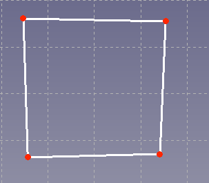
Ara no ens preocuparem per la precisió de la plaça perquè dibuixar amb el ratolí és impossible obtenir un quadrat perfecte.
; BR |
Amb el mètode anterior, podem crear un dibuix similar a un quadrat, però quan creem figures ** amb el ratolí, el resultat sempre tindrà errors **.
Per fer el nostre quadrat perfecte, crearem ** restriccions ** en les línies que la formen.
Primer seleccionem les dues línies verticals i creem una restricció vertical ** ** fent clic a | Restricció-vertical |.
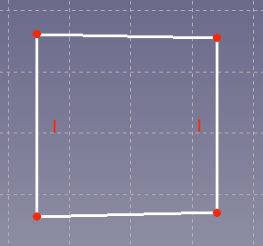
Les línies es convertiran perfectament verticals i apareixeran dues petites icones que representen la restricció vertical.
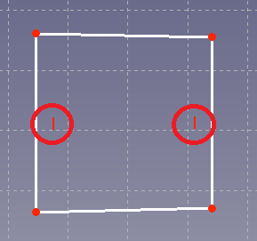
; BR |
A continuació, seleccionem les dues línies horitzontals per crear una restricció horitzontal ** ** Feu clic a | Restricció-Horizontal |.
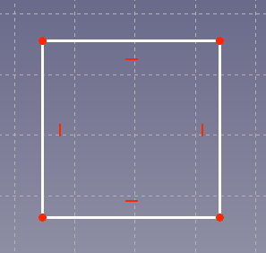
Ara el nostre dibuix s’assembla molt més a un quadrat perfecte, però no hem acabat.
; BR |
En aquest punt farem que un costat vertical sigui de la mateixa mida que un costat horitzontal, que correspon a un quadrat.
Seleccionem un costat vertical i un costat horitzontal i creem una ** restricció d’igualtat ** fent clic a | Restricció-igualtat |.
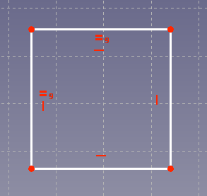
Ara la nostra figura és un quadrat perfecte. Si ** movem un punt ** de la plaça, això mantindrà les proporcions.
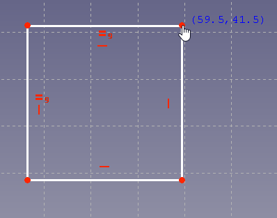
; BR |
Finalment, donarem una mida exacta a la plaça. Primer ** Seleccionem una línia vertical ** i, a continuació, creem una restricció de nivell vertical fent clic | Restricció-cota-vertical |, amb el valor de ** 30 mil·límetres **.
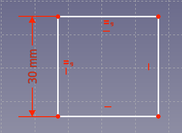
Un cop creat el nivell, podem fer -ho doblar per editar -lo i canviar -lo.
; BR |
A continuació, eliminarem una restricció **.
Feu clic a la icona de restricció horitzontal a la línia inferior, aquesta icona canviarà de color verd.
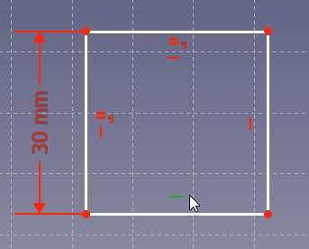
Premeu la tecla Suprimeix `` Supr` 'al teclat i la restricció desapareix, de manera que podem moure la línia inferior i canviar la seva inclinació.
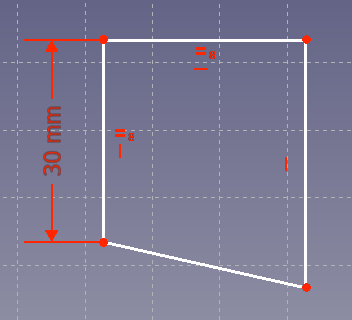
; BR |
Exercicis¶
Creeu un esbós com la imatge.
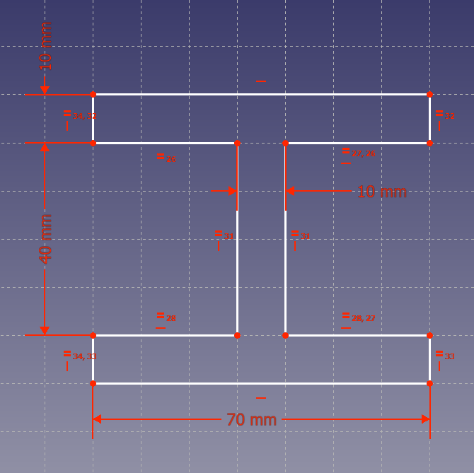
Amb les següents restriccions.
- Restricció horitzontal en totes les línies horitzontals.
- Restricció vertical en totes les línies verticals.
- Restricció d’igualtat en totes les línies d’igual longitud.
- La restricció de COTA en les quatre dimensions que apareixen al dibuix.
Extreu el dibuix de 100 mil·límetres per generar un feix a H.
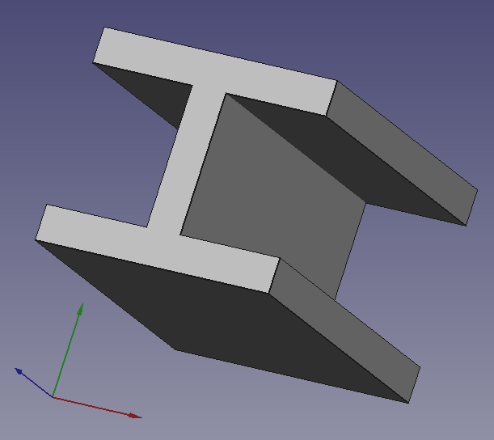
; BR |
Videotuitorial¶
Vídeo: Aplicació de restriccions.